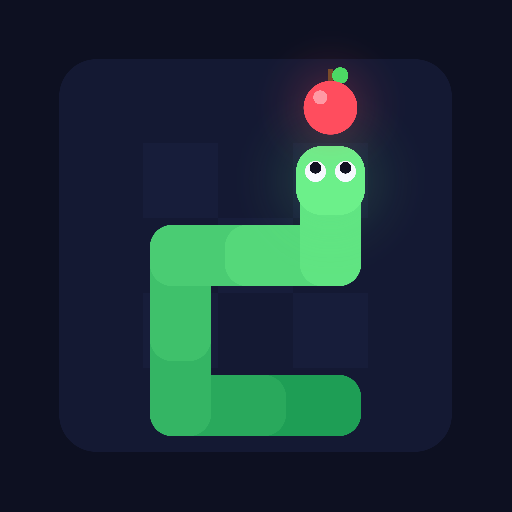

Snake VS - Política de Privacidade
Última atualização: 12 de novembro de 2026
Política de Privacidade
O Snake VS ("o jogo") é desenvolvido por Devolib. Ele existe como app para Android e como versão para navegador.
O app para Android não coleta, não envia e não compartilha nenhum dado pessoal. Na versão para navegador, só o ranking online, que é opcional, envia um apelido e a pontuação.
App para Android
- Não há cadastro, login, anúncios, analytics, rastreamento nem acesso à internet.
- As únicas informações gravadas são recordes e configurações (dificuldade, som, vibração e tipo de controle). Elas ficam salvas apenas na memória interna do seu aparelho e são apagadas ao desinstalar o jogo ou limpar os dados do app.
Versão para navegador
- Recordes, configurações e o último apelido usado ficam salvos só no seu navegador (armazenamento local do site). Eles são apagados ao limpar os dados do site.
- Ranking online (opcional). Só quando você toca em "Salvar no ranking" e digita um apelido, o jogo envia ao servidor do jogo o apelido, a pontuação, o modo, a dificuldade, as maçãs, a fase e os passos da partida. O servidor guarda esses dados junto com a data e hora do envio, e eles aparecem publicamente na tela de Ranking.
- Use um apelido, não seu nome completo. O apelido tem até 12 caracteres.
- O endereço IP de quem envia ou consulta o ranking é usado só na memória do servidor, por poucos minutos, para limitar o número de envios. Ele não é gravado.
- Não há cadastro, login, anúncios, analytics nem rastreamento. Os dados do ranking não são vendidos nem compartilhados.
- Para remover um apelido do ranking, abra uma issue no endereço de contato informando o apelido, o modo e a dificuldade. Pontuações também podem ser removidas por moderação.
Permissões
- Vibração: usada só para dar retorno tátil durante o jogo. Pode ser desligada em Opções.
Crianças
O app para Android não coleta dados de nenhum usuário, inclusive de crianças. Na versão para navegador, o único dado enviado é o apelido do ranking, e só se o jogador decidir salvar a pontuação.
Alterações
Mudanças nesta política serão publicadas nesta página, com a nova data de atualização.
Contato
Dúvidas ou pedidos de remoção: abra uma issue em github.com/betinn/snakevs/issues.
Privacy Policy
Snake VS ("the game") is developed by Devolib. It exists as an Android app and as a browser version.
The Android app does not collect, transmit or share any personal data. In the browser version, only the online ranking, which is optional, sends a nickname and the score.
Android app
- There is no account, login, advertising, analytics, tracking or internet access.
- The only information stored is high scores and settings (difficulty, sound, vibration and control type). It is kept only on your device and is deleted when you uninstall the game or clear its data.
Browser version
- High scores, settings and the last nickname used are stored only in your browser (the site's local storage). They are deleted when you clear the site's data.
- Online ranking (optional). Only when you tap "Save to ranking" and type a nickname, the game sends the nickname, score, mode, difficulty, apples, stage and steps of that match to the game server. The server stores them with the date and time of submission, and they are shown publicly on the Ranking screen.
- Use a nickname, not your full name. Nicknames are up to 12 characters.
- The IP address of whoever submits or reads the ranking is used only in the server's memory, for a few minutes, to limit submissions. It is not stored.
- There is no account, login, advertising, analytics or tracking. Ranking data is not sold or shared.
- To have a nickname removed from the ranking, open an issue at the contact address with the nickname, mode and difficulty. Scores may also be removed by moderation.
Permissions
- Vibration: used only for in-game haptic feedback. It can be turned off in Options.
Children
The Android app does not collect data from any user, including children. In the browser version, the only data sent is the ranking nickname, and only if the player chooses to save the score.
Changes
Changes to this policy will be published on this page with a new update date.
Contact
Questions or removal requests: open an issue at github.com/betinn/snakevs/issues.